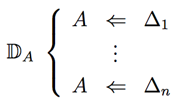
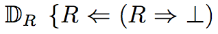

Proof-Theoretic Semantics
Proof-theoretic semantics is an alternative to truth-condition semantics. It is based on the fundamental assumption that the central notion in terms of which meanings are assigned to certain expressions of our language, in particular to logical constants, is that of proof rather than truth. In this sense proof-theoretic semantics is semantics in terms of proof . Proof-theoretic semantics also means the semantics of proofs, i.e., the semantics of entities which describe how we arrive at certain assertions given certain assumptions. Both aspects of proof-theoretic semantics can be intertwined, i.e. the semantics of proofs is itself often given in terms of proofs.
Proof-theoretic semantics has several roots, the most specific one being Gentzen’s remarks that the introduction rules in his calculus of natural deduction define the meanings of logical constants, while the elimination rules can be obtained as a consequence of this definition (see section 2.2.1). More broadly, it belongs to what Prawitz called general proof theory (see section 1.1). Even more broadly, it is part of the tradition according to which the meaning of a term should be explained by reference to the way it is used in our language.
Within philosophy, proof-theoretic semantics has mostly figured under the heading “theory of meaning”. This terminology follows Dummett, who claimed that the theory of meaning is the basis of theoretical philosophy, a view which he attributed to Frege. The term “proof-theoretic semantics” was proposed by Schroeder-Heister (1991; used already in 1987 lectures in Stockholm) in order not to leave the term “semantics” to denotationalism alone—after all, “semantics” is the standard term for investigations dealing with the meaning of linguistic expressions. Furthermore, unlike “theory of meaning”, the term “proof-theoretic semantics” covers philosophical and technical aspects likewise. In 1999, the first conference with this title took place in Tübingen, the second one in 2013. The first textbook with this title appeared in 2015.
- 1. Background
- 2. Some versions of proof-theoretic semantics
- 3. Extensions and alternatives to standard proof-theoretic semantics
- 4. Conclusion and outlook
- Bibliography
- Academic Tools
- Other Internet Resources
- Related Entries
This entry also includes the following supplementary documents that are linked into the text:
1. Background
1.1 General proof theory: consequence vs. proofs
The term “general proof theory” was coined by Prawitz. In general proof theory, “proofs are studied in their own right in the hope of understanding their nature”, in contradistinction to Hilbert-style “reductive proof theory”, which is the “attempt to analyze the proofs of mathematical theories with the intention of reducing them to some more elementary part of mathematics such as finitistic or constructive mathematics” (Prawitz, 1972, p. 123). In a similar way, Kreisel (1971) asks for a re-orientation of proof theory. He wants to explain “recent work in proof theory from a neglected point of view. Proofs and their representations by formal derivations are treated as principal objects of study, not as mere tools for analyzing the consequence relation.” (Kreisel, 1971, p. 109) Whereas Kreisel focuses on the dichotomy between a theory of proofs and a theory of provability, Prawitz concentrates on the different goals proof theory may pursue. However, both stress the necessity of studying proofs as fundamental entities by means of which we acquire demonstrative (especially mathematical) knowledge. This means in particular that proofs are epistemic entities which should not be conflated with formal proofs or derivations. They are rather what derivations denote when they are considered to be representations of arguments. (However, in the following we often use “proof” synonymously with “derivation”, leaving it to the reader to determine whether formal proofs or proofs as epistemic entities are meant.) In discussing Prawitz’s (1971) survey, Kreisel (1971, p. 111) explicitly speaks of a “mapping” between derivations and mental acts and considers it as a task of proof theory to elucidate this mapping, including the investigation of the identity of proofs, a topic that Prawitz and Martin-Löf had put on the agenda.
This means that in general proof theory we are not solely interested in whether B follows from A, but in the way by means of which we arrive at B starting from A. In this sense general proof theory is intensional and epistemological in character, whereas model theory, which is interested in the consequence relation and not in the way of establishing it, is extensional and metaphysical.
1.2 Inferentialism, intuitionism, anti-realism
Proof-theoretic semantics is inherently inferential, as it is inferential activity which manifests itself in proofs. It thus belongs to inferentialism (see Brandom, 2000) according to which inferences and the rules of inference establish the meaning of expressions, in contradistinction to denotationalism, according to which denotations are the primary sort of meaning. Inferentialism and the ‘meaning-as-use’ view of semantics is the broad philosophical framework of proof-theoretic semantics. This general philosophical and semantical perspective merged with constructive views which originated in the philosophy of mathematics, especially in mathematical intuitionism. Most forms of proof-theoretic semantics are intuitionistic in spirit, which means in particular that principles of classical logic such as the law of excluded middle or the double negation law are rejected or at least considered problematic. This is partly due to the fact that the main tool of proof-theoretic semantics, the calculus of natural deduction, is biased towards intuitionistic logic, in the sense that the straightforward formulation of its elimination rules is the intuitionistic one. There classical logic is only available by means of some rule of indirect proof, which, at least to some extent, destroys the symmetry of the reasoning principles (see section 3.5). If one adopts the standpoint of natural deduction, then intuitionistic logic is a natural logical system. Also the BHK (Brouwer-Heyting-Kolmogorov) interpretation of the logical signs plays a significant role. This interpretation is not a unique approach to semantics, but comprises various ideas which are often more informally than formally described. Of particular importance is its functional view of implication, according to which a proof of A → B is a constructive function which, when applied to a proof of A yields a proof of B. This functional perspective underlies many conceptions of proof-theoretic semantics, in particular those of Lorenzen, Prawitz and Martin Löf (see sections 2.1.1, 2.2.2, 2.2.3).
According to Dummett, the logical position of intuitionism corresponds to the philosophical position of anti-realism. The realist view of a recognition independent reality is the metaphysical counterpart of the view that all sentences are either true or false independent of our means of recognizing it. Following Dummett, major parts of proof-theoretic semantics are associated with anti-realism.
1.3 Gentzen-style proof theory: Reduction, normalization, cut elimination
Gentzen’s calculus of natural deduction and its rendering by Prawitz is the background to most approaches to proof-theoretic semantics. Natural deduction is based on at least three major ideas:
- Discharge of assumptions: Assumptions can be “discharged” or “eliminated” in the course of a derivation, so the central notion of natural deduction is that of a derivation depending on assumptions.
- Separation: Each primitive rule schema contains only a single logical constant.
- Introductions and eliminations: The rules for logical constants come in pairs. The introduction rule(s) allow(s) one to infer a formula with the constant in question as its main operator, the elimination rule(s) permit(s) to draw consequences from such a formula.
In Gentzen’s natural deduction system for first-order logic derivations are written in tree form and based on the well-known rules. For example, implication has the following introduction and elimination rules
[A] B →I A→B
A→B A →E B
where the brackets indicate the possibility to discharge occurrences of the assumption A. The open assumptions of a derivation are those assumptions on which the end-formula depends. A derivation is called closed, if it has no open assumption, otherwise it is called open. If we deal with quantifiers, we have to consider open individual variables (sometimes called “parameters”), too. Metalogical features crucial for proof-theoretic semantics and for the first time systematically investigated and published by Prawitz (1965) include:
Reduction: For every detour consisting of an introduction immediately followed by an elimination there is a reduction step removing this detour.
Normalization: By successive applications of reductions, derivations can be transformed into normal forms which contain no detours.
For implication the standard reduction step removing detours is the following:
[A] ⋮ B | A→B A B reduces to
|
A
⋮
B
A simple, but very important corollary of normalization is the following: Every closed derivation in intuitionistic logic can be reduced to a derivation using an introduction rule in the last step. We also say that intuitionistic natural deduction satisfies the “introduction form property”. In proof-theoretic semantics this result figures prominently under the heading “fundamental assumption” (Dummett, 1991, p. 254). The “fundamental assumption” is a typical example of a philosophical re-interpretation of a technical proof-theoretic result.
Further Reading:
For the general orientation of proof-theoretic semantics the special issue of Synthese (Kahle and Schroeder-Heister, 2006) the reader edited by Piecha and Schroeder-Heister (2016b), the textbook by Francez (2015), Schroeder-Heister (2008b, 2016a), and Wansing (2000).
For the philosophical position and development of proof theory the entries on Hilbert’s program and the development of proof theory as well as Prawitz (1971).
For intuitionism the entries on intuitionistic logic, intuitionism in the philosophy of mathematics and the development of intuitionistic logic.
For anti-realism the entry on challenges to metaphysical realism as well as Tennant (1987); Tennant (1997), Tranchini (2010); Tranchini (2012a).
For Gentzen-style proof-theory and the theory of natural deduction: besides Gentzen’s (1934/35) original presentation, Jaśkowski’s (1934) theory of suppositions and Prawitz’s (1965) classic monograph, Tennant (1978), Troelstra and Schwichtenberg (2000), and Negri and von Plato (2001).
2. Some versions of proof-theoretic semantics
2.1 The semantics of implications: Admissibility, derivability, rules
The semantics of implication lies at the heart of proof-theoretic semantics. In contradistinction to classical truth-condition semantics, implication is a logical constant in its own right. It has also the characteristic feature that it is tied to the concept of consequence. It can be viewed as expressing consequence at the sentential level due to modus ponens and to what in Hilbert-style systems is called the deduction theorem, i.e. the equivalence of Γ,A ⊢ B and Γ ⊢ A → B.
A very natural understanding of an implication A → B is reading it as expressing the inference rule which allows one to pass over from A to B. Licensing the step from A to B on the basis of A → B is exactly, what modus ponens says. And the deduction theorem can be viewed as the means of establishing a rule: Having shown that B can be deduced from A justifies the rule that from A we may pass over to B. A rule-based semantics of implication along such lines underlies several conceptions of proof-theoretic semantics, notably those by Lorenzen, von Kutschera and Schroeder-Heister.
2.1.1 Operative logic
Lorenzen, in his Introduction to Operative Logics and Mathematics (1955) starts with logic-free (atomic) calculi, which correspond to production systems or grammars. He calls a rule admissible in such a system if it can be added to it without enlarging the set of its derivable atoms. The implication arrow → is interpreted as expressing admissibility. An implication A → B is considered to be valid, if, when read as a rule, it is admissible (with respect to the underlying calculus). For iterated implications (= rules) Lorenzen develops a theory of admissibility statements of higher levels. Certain statements such as A →A or ((A →B), (B →C)) → (A →C) hold independently of the underlying calculus. They are called universally admissible [“allgemeinzulässig”]), and constitute a system of positive implicational logic. In a related way, laws for universal quantification ∀ are justified using admissibility statements for rules with schematic variables.
For the justification of the laws for the logical constants ∧, ∨, ∃ and ⊥, Lorenzen uses an inversion principle (a term he coined). In a very simplified form, without taking variables in rules into account, the inversion principle says that everything that can be obtained from every defining condition of A can be obtained from A itself. For example, in the case of disjunction, let A and B each be a defining condition of A∨B as expressed by the primitive rules A → A∨B and B → A∨B. Then the inversion principle says that A∨B →C is admissible assuming A →C and B →C, which justifies the elimination rule for disjunction. The remaining connectives are dealt with in a similar way. In the case of ⊥, the absurdity rule ⊥→ A is obtained from the fact that there is no defining condition for ⊥.
2.1.2 Gentzen semantics
In what he calls “Gentzen semantics”, von Kutschera (1968) gives, as Lorenzen, a semantics of logically complex implication-like statements A1,…,An → B with respect to calculi K which govern the reasoning with atomic sentences. The fundamental difference to Lorenzen is the fact that A1,…,An → B now expresses a derivability rather than an admissibility statement.
In order to turn this into a semantics of the logical constants of propositional logic, von Kutschera argues as follows: When giving up bivalence, we can no longer use classical truth-value assignments to atomic formulas. Instead we can use calculi which prove or refute atomic sentences. Moreover, since calculi not only generate proofs or refutations but arbitrary derivability relations, the idea is to start directly with derivability in an atomic system and extend it with rules that characterize the logical connectives. For that von Kutschera gives a sequent calculus with rules for the introduction of n-ary propositional connectives in the succedent and antecedent, yielding a sequent system for generalized propositional connectives. Von Kutschera then goes on to show that the generalized connectives so defined can all be expressed by the standard connectives of intuitionistic logic (conjunction, disjunction, implication, absurdity).
2.1.3 Natural deduction with higher-level rules
Within a programme of developing a general schema for rules for arbitrary logical constants, Schroeder-Heister (1984) proposed that a logically complex formula should express the content or common content of systems of rules. This means that not the introduction rules are considered basic but the consequences of defining conditions. A rule R is either a formula A or has the form R1,…,Rn ⇒ A, where R1,…,Rn are themselves rules. These so-called “higher-level rules” generalize the idea that rules may discharge assumptions to the case where these assumptions can themselves be rules. For the standard logical constants this means that A∧B expresses the content of the pair (A,B); A → B expresses the content of the rule A ⇒ B; A∨B expresses the common content of A and B; and absurdity ⊥ expresses the common content of the empty family of rule systems. In the case of arbitrary n-ary propositional connectives this leads to a natural deduction system with generalized introduction and elimination rules. These general connectives are shown to be definable in terms of the standard ones, establishing the expressive completeness of the standard intuitionistic connectives.
Further Reading:For Lorenzen’s approach in relation to Prawitz-style proof-theoretic semantics: Schroeder-Heister (2008a). For extensions of expressive completeness in the style of von Kutschera: Wansing (1993a).
2.2 The Semantics of derivations as based on introduction rules
2.2.1 Inversion principles and harmony
In his Investigations into Logical Deduction, Gentzen makes some, nowadays very frequently quoted, programmatic remarks on the semantic relationship between introduction and elimination inferences in natural deduction.
The introductions represent, as it were, the ‘definitions’ of the symbols concerned, and the eliminations are no more, in the final analysis, than the consequences of these definitions. This fact may be expressed as follows: In eliminating a symbol, we may use the formula with whose terminal symbol we are dealing only ‘in the sense afforded it by the introduction of that symbol’. (Gentzen, 1934/35, p. 80)
This cannot mean, of course, that the elimination rules are deducible from the introduction rules in the literal sense of the word; in fact, they are not. It can only mean that they can be justified by them in some way.
By making these ideas more precise it should be possible to display the E-inferences as unique functions of their corresponding I-inferences, on the basis of certain requirements. (ibid., p. 81)
So the idea underlying Gentzen’s programme is that we have “definitions” in the form of introduction rules and some sort of semantic reasoning which, by using “certain requirements”, validate the elimination rules.
By adopting Lorenzen’s term and adapting its underlying idea to the context of natural deduction, Prawitz (1965) formulated an “inversion principle” to make Gentzen’s remarks more precise:
Let α be an application of an elimination rule that has B as consequence. Then, deductions that satisfy the sufficient condition […] for deriving the major premiss of α, when combined with deductions of the minor premisses of α (if any), already “contain” a deduction of B; the deduction of B is thus obtainable directly from the given deductions without the addition of α. (p. 33)
Here the sufficient conditions are given by the premisses of the corresponding introduction rules. Thus the inversion principle says that a derivation of the conclusion of an elimination rule can be obtained without an application of the elimination rule if its major premiss has been derived using an introduction rule in the last step, which means that a combination
⋮ I-inference A {Di}
E-inferenceB
of steps, where {Di} stands for a (possibly empty) list of deductions of minor premisses, can be avoided.
The relationship between introduction and elimination rules is often described as “harmony”, or as governed by a “principle of harmony” (see, e.g. Tennant, 1978, p. 74). This terminology is not uniform and sometimes not even fully clear. It essentially expresses what is also meant by “inversion”. Even if “harmony” is a term which suggests a symmetric relationship, it is frequently understood as expressing a conception based on introduction rules as, e.g., in Read’s (2010) “general elimination harmony” (although occasionally one includes elimination based conceptions as well). Sometimes harmony is supposed to mean that connectives are strongest or weakest in a certain sense given their introduction or their elimination rules. This idea underlies Tennant’s (1978) harmony principle, and also Popper’s and Koslow’s structural characterizations (see section 2.4). The specific relationship between introduction and elimination rules as formulated in an inversion principle excludes alleged inferential definitions such as that of the connective tonk, which combines an introduction rule for disjunction with an elimination rule for conjunction, and which has given rise to a still ongoing debate on the format of inferential definitions (see Humberstone, 2010).
2.2.2 Proof-theoretic validity
Proof-theoretic validity is the dominating approach to proof-theoretic semantics. As a technical concept it was developed by Prawitz (1971; 1973; 1974), by turning a proof-theoretic validity notion based on ideas by Tait (1967) and originally used to prove strong normalization, into a semantical concept. Dummett provided much philosophical underpinning to this notion (see Dummett, 1991). The objects which are primarily valid are proofs as representations of arguments. In a secondary sense, single rules can be valid if they lead from valid proofs to valid proofs. In this sense, validity is a global rather than a local notion. It applies to arbitrary derivations over a given atomic system, which defines derivability for atoms. Calling a proof which uses an introduction rule in the last step canonical, it is based on the following three ideas:
- The priority of closed canonical proofs.
- The reduction of closed non-canonical proofs to canonical ones.
- The substitutional view of open proofs.
Ad 1: The definition of validity is based on Gentzen’s idea that introduction rules are ‘self-justifying’ and give the logical constants their meaning. This self-justifying feature is only used for closed proofs, which are considered primary over open ones.
Ad 2: Noncanonical proofs are justified by reducing them to canonical ones. Thus reduction procedures (detour reductions) as used in normalization proofs play a crucial role. As they justify arguments, they are also called “justifications” by Prawitz. This definition again only applies to closed proofs, corresponding to the introduction form property of closed normal derivations in natural deduction (see section 1.3).
Ad 3: Open proofs are justified by considering their closed instances. These closed instances are obtained by replacing their open assumptions with closed proofs of them, and their open variables with closed terms. For example, a proof of B from A is considered valid, if every closed proof, which is obtained by replacing the open assumption A with a closed proof of A, is valid. In this way, open assumptions are considered to be placeholders for closed proofs, for which reason we may speak of a substitutional interpretation of open proofs.
This yields the following definition of proof-theoretic validity:
- Every closed proof in the underlying atomic system is valid.
- A closed canonical proof is considered valid, if its immediate subproofs are valid.
- A closed noncanonical proof is considered valid, if it reduces to a valid closed canonical proof or to a closed proof in the atomic system.
- An open proof is considered valid, if every closed proof obtained by replacing its open assumptions with closed proofs and its open variables with closed terms is valid.
Formally, this definition has to be relativized to the atomic system considered, and to the set of justifications (proof reductions) considered. Furthermore, proofs are here understood as candidates of valid proofs, which means that the rules from which they are composed are not fixed. They look like proof trees, but their individual steps can have an arbitrary (finite) number of premisses and can eliminate arbitrary assumptions. The definition of validity singles out those proof structures which are ‘real’ proofs on the basis of the given reduction procedures.
Validity with respect to every choice of an atomic system can be viewed as a generalized notion of logical validity. In fact, if we consider the standard reductions of intuitionistic logic, then all derivations in intuitionistic logic are valid independent of the atomic system considered. This is semantical correctness. We may ask if the converse holds, viz. whether, given that a derivation is valid for every atomic system, there is a corresponding derivation in intuitionistic logic. That intuitionistic logic is complete in this sense is known as Prawitz’s conjecture (see Prawitz, 1973; Prawitz, 2013). However, no satisfactory proof of it has been given. There are considerable doubts concerning the validity of this conjecture for systems that go beyond implicational logic. In any case it will depend on the precise formulation of the notion of validity, in particular on its handling of atomic systems.
For a more formal definition and detailed examples demonstrating validity, as well as some remarks on Prawitz’s conjecture see the
Supplement on Examples of proof-theoretic validity.
2.2.3 Constructive type theory
Martin-Löf’s type theory (Martin-Löf, 1984) is a leading approach in constructive logic and mathematics. Philosophically, it shares with Prawitz the three fundamental assumptions of standard proof-theoretic semantics, mentioned in section 2.2.2: the priority of closed canonical proofs, the reduction of closed non-canonical proofs to canonical ones and the substitutional view of open proofs. However, Martin-Löf’s type theory has at least two characteristic features which go beyond other approaches in proof-theoretic semantics:
- The consideration of proof objects and the corresponding distinction between proofs-as-objects and proofs-as-demonstrations.
- The view of formation rules as intrinsic to the proof system rather than as external rules.
The first idea goes back to the Curry-Howard correspondence (see de Groote, 1995; Sørensen and Urzyczyn, 2006), according to which the fact that a formula A has a certain proof can be codified as the fact that a certain term t is of type A, whereby the formula A is identified with the type A. This can be formalized in a calculus for type assignment, whose statements are of the form t : A. A proof of t : A in this system can be read as showing that t is a proof of A. Martin-Löf (1995; 1998) has put this into a philosophical perspective by distinguishing this two-fold sense of proof in the following way. First we have proofs of statements of the form t : A. These statements are called judgements, their proofs are called demonstrations. Within such judgements the term t represents a proof of the proposition A. A proof in the latter sense is also called a proof object. When demonstrating a judgement t : A, we demonstrate that t is a proof (object) for the proposition A. Within this two-layer system the demonstration layer is the layer of argumentation. Unlike proof objects, demonstrations have epistemic significance; their judgements carry assertoric force. The proof layer is the layer at which meanings are explained: The meaning of a proposition A is explained by telling what counts as a proof (object) for A. The distinction made between canonical and non-canonical proofs is a distinction at the propositional and not at the judgement al layer. This implies a certain explicitness requirement. When I have proved something, I must not only have a justification for my proof at my disposal as in Prawitz’s notion of validity, but at the same time have to be certain that this justification fulfills its purpose. This certainty is guaranteed by a demonstration. Mathematically, this two-fold sense of proof develops its real power only when types may themselves depend on terms. Dependent types are a basic ingredient of of Martin-Löf’s type theory and related approaches.
The second idea makes Martin-Löf’s approach strongly differ from all other definitions of proof-theoretic validity. The crucial difference, for example, to Prawitz’s procedure is that it is not metalinguistic in character, where “metalinguistic” means that propositions and candidates of proofs are specified first and then, by means of a definition in the metalanguage, it is fixed which of them are valid and which are not. Rather, propositions and proofs come into play only in the context of demonstrations. For example, if we assume that something is a proof of an implication A → B, we need not necessarily show that both A and B are well-formed propositions outright, but, in addition to knowing that A is a proposition, we only need to know that B is a proposition provided that A has been proved. Being a proposition is expressed by a specific form of judgement, which is established in the same system of demonstration which is used to establish that a proof of a proposition has been achieved.
In Martin-Löf’s theory, proof-theoretic semantics receives a strongly ontological component. A recent debate deals with the question of whether proof objects have a purely ontological status or whether they codify knowledge, even if they are not epistemic acts themselves.
Further Reading:For inversion principles see Schroeder-Heister (2007).
For variants of proof-theoretic harmony see Francez (2015) and Schroeder-Heister (2016a). For Prawitz’s definition of proof-theoretic validity see Schroeder-Heister (2006).
For Matin-Löf’s type theory, see the entry on type theory as well as Sommaruga (2000).
2.3 Clausal definitions and definitional reasoning
Proof-theoretic semantics normally focuses on logical constants. This focus is practically never questioned, apparently because it is considered so obvious. In proof theory, little attention has been paid to atomic systems, although there has been Lorenzen’s early work (see section 2.1.1), where the justification of logical rules is embedded in a theory of arbitrary rules, and Martin-Löf’s (1971) theory of iterated inductive definitions where introduction and elimination rules for atomic formulas are proposed. The rise of logic programming has widened this perspective. From the proof-theoretic point of view, logic programming is a theory of atomic reasoning with respect to clausal definitions of atoms. Definitional reflection is an approach to proof-theoretic semantics that takes up this challenge and attempts to build a theory whose range of application goes beyond logical constants.
2.3.1 The challenge from logic programming
In logic programming we are dealing with program clauses of the form
A ⇐ B1, …, Bm
which define atomic formulas. Such clauses can naturally be interpreted as describing introduction rules for atoms. From the point of view of proof-theoretic semantics the following two points are essential:
(1) Introduction rules (clauses) for logically compound formulas are not distinguished in principle from introduction rules (clauses) for atoms. Interpreting logic programming proof-theoretically motivates an extension of proof-theoretic semantics to arbitrary atoms, which yields a semantics with a much wider realm of applications.
(2) Program clauses are not necessarily well-founded. For example, the head of a clause may occur in its body. Well-founded programs are just a particular sort of programs. The use of arbitrary clauses without further requirements in logic programming is a motivation to pursue the same idea in proof-theoretic semantics, admitting just any sort of introduction rules and not just those of a special form, and in particular not necessarily ones which are well-founded. This carries the idea of definitional freedom, which is a cornerstone of logic programming, over to semantics, again widening the realm of application of proof-theoretic semantics.
The idea of considering introduction rules as meaning-giving rules for atoms is closely related to the theory of inductive definitions in its general form, according to which inductive definitions are systems of rules (see Aczel, 1977).
2.3.2 Definitional reflection
The theory of definitional reflection (Hallnäs, 1991; Hallnäs, 2006; Hallnäs and Schroeder-Heister, 1990/91; Schroeder-Heister, 1993) takes up the challenge from logic programming and gives a proof-theoretic semantics not just for logical constants but for arbitrary expressions, for which a clausal definition can be given. Formally, this approach starts with a list of clauses which is the definition considered. Each clause has the form
A ⇐ Δ
where the head A is an atomic formula (atom). In the simplest case, the body Δ is a list of atoms B1,…,Bm, in which case a definition looks like a definite logic program. We often consider an extended case where Δ may also contain some structural implication ‘⇒’, and sometimes even some structural universal implication, which essentially is handled by restricting substitution. If the definition of A has the form

then A has the following introduction and elimination rules
Δ1 · · · Δn A A
[Δ1] [Δn] A C · · · C C
The introduction rules, also called rules of definitional closure, express reasoning ‘along’ the clauses. The elimination rule is called the principle of definitional reflection, as it reflects upon the definition as a whole. If Δ1,…, Δn exhaust all possible conditions to generate A according to the given definition, and if each of these conditions entails the very same conclusion C, then A itself entails this conclusion. If the clausal definition is viewed as an inductive definition, this principle can be viewed as expressing the extremal clause in inductive definitions: Nothing else beyond the clauses given defines A. Obviously, definitional reflection is a generalized form of the inversion principles discussed. It develops its genuine power in definitional contexts with free variables that go beyond purely propositional reasoning, and in contexts which are not well-founded. An example of a non-wellfounded definition is the definition of an atom R by its own negation:

This example is discussed in detail in the
Supplement on Definitional reflection and paradoxes.Further Reading:
For non-wellfoundedness and paradoxes see the entries on self-reference and Russell’s paradox, as well as the references quoted in the supplement linked to.
2.4 Structural characterization of logical constants
There is a large field of ideas and results concerning what might be called the “structural characterization” of logical constants, where “structural” is here meant both in the proof-theoretic sense of “structural rules” and in the sense of a framework that bears a certain structure, where this framework is again proof-theoretically described. Some of its authors use a semantical vocabulary and at least implicitly suggest that their topic belongs to proof-theoretic semantics. Others explicitly deny these connotations, emphasizing that they are interested in a characterization which establishes the logicality of a constant. The question “What is a logical constant?” can be answered in proof-theoretic terms, even if the semantics of the constants themselves is truth-conditional: Namely by requiring that the (perhaps truth-conditionally defined) constants show a certain inferential behaviour that can be described in proof-theoretic terms. However, as some of the authors consider their characterization at the same time as a semantics, it is appropriate that we mention some of these approaches here.
The most outspoken structuralist with respect to logical constants, who explicitly understands himself as such, is Koslow. In his Structuralist Theory of Logic (1992) he develops a theory of logical constants, in which he characterizes them by certain “implication relations”, where an implication relation roughly corresponds to a finite consequence relation in Tarski’s sense (which again can be described by certain structural rules of a sequent-style system). Koslow develops a structural theory in the precise metamathematical sense, which does not specify the domain of objects in any way beyond the axioms given. If a language or any other domain of objects equipped with an implication relation is given, the structural approach can be used to single out logical compounds by checking their implicational properties.
In his early papers on the foundations of logic, Popper (1947a; 1947b) gives inferential characterizations of logical constants in proof-theoretic terms. He uses a calculus of sequents and characterizes logical constants by certain derivability conditions of such sequents. His terminology clearly suggests that he intends a proof-theoretic semantics of logical constants, as he speaks of “inferential definitions” and the “trivialization of mathematical logic” achieved by defining constants in the way described. Although his presentation is not free from conceptual imprecision and errors, he was the first to consider the sequent-style inferential behaviour of logical constants to characterize them. This is all the more remarkable as he was probably not at all, and definitely not fully aware of Gentzen’s sequent calculus and Gentzen’s further achievements (he was in correspondence with Bernays, though). However, against his own opinion, his work can better be understood as an attempt to define the logicality of constants and to structurally characterize them, than as a proof-theoretic semantics in the genuine sense. He nevertheless anticipated many ideas now common in proof-theoretic semantics, such as the characterization of logical constants by means of certain minimality or maximality conditions with respect to introduction or elimination rules.
Important contributions to the logicality debate that characterize logical constants inferentially in terms of sequent calculus rules are those by Kneale (1956) and Hacking (1979). A thorough account of logicality is proposed by Došen (1980; 1989) in his theory of logical constants as “punctuation marks”, expressing structural features at the logical level. He understands logical constants as being characterized by certain double-line rules for sequents which can be read in both directions. For example, conjunction and disjunction are (in classical logic, with multiple-formulae succedents) characterized by the double-line rules
Γ⊢A, Δ Γ⊢B, Δ Γ⊢ A∧B, Δ
Γ, A⊢ Δ Γ, B⊢ Δ Γ⊢ A∨B, Δ
Došen is able to give characterizations which include systems of modal logic. He explicitly considers his work as a contribution to the logicality debate and not to any conception of proof-theoretic semantics. Sambin et al., in their Basic Logic (Sambin, Battilotti, and Faggian, 2000), explicitly understand what Došen calls double-line rules as fundamental meaning giving rules. The double-line rules for conjunction and disjunction are read as implicit definitions of these constants, which by some procedure can be turned into the explicit sequent-style rules we are used to. So Sambin et al. use the same starting point as Došen, but interpret it not as a structural description of the behaviour of constants, but semantically as their implicit definition (see Schroeder-Heister, 2013).
There are several other approaches to a uniform proof-theoretic characterization of logical constants, all of whom at least touch upon issues of proof-theoretic semantics. Such theories are Belnap’s Display Logic (Belnap, 1982), Wansing’s Logic of Information Structures (Wansing, 1993b), generic proof editing systems and their implementations such as the Edinburgh logical framework (Harper, Honsell, and Plotkin, 1987) and many successors which allow the specification of a variety of logical systems. Since the rise of linear and, more generally, substructural logics (Di Cosmo and Miller, 2010; Restall, 2009) there are various approaches dealing with logics that differ with respect to restrictions on their structural rules. A recent movement away from singling out a particular logic as the true one towards a more pluralist stance (see, e.g., Beall and Restall, 2006) which is interested in what different logics have in common without any preference for a particular logic can be seen as a shift away from semantical justification towards structural characterization.
2.5 Categorial proof theory
There is a considerable literature on category theory in relation to proof theory, and, following seminal work by Lawvere, Lambek and others (see Lambek and Scott, 1986, and the references therein), category itself can be viewed as a kind of abstract proof theory. If one looks at an arrow A → B in a category as a kind of abstract proof of B from A, we have a representation which goes beyond pure derivability of B from A (as the arrow has its individuality), but does not deal with the particular syntactic structure of this proof. For intuitionistic systems, proof-theoretic semantics in categorial form comes probably closest to what denotational semantics is in the classical case.
One of the most highly developed approaches to categorial proof theory is due to Došen. He has not only advanced the application of categorial methods in proofs theory (e.g., Došen and Petrić, 2004), but also shown how proof-theoretic methods can be used in category theory itself (Došen, 2000). Most important for categorial logic in relation to proof-theoretic semantics is that in categorial logic, arrows always come together with an identity relation, which in proof-theory corresponds to the identity of proofs. In this way, ideas and results of categorial proof theory pertain to what may be called intensional proof-theoretic semantics, that is, the study of proofs as entities in their own right, not just as vehicles to establish consequences (Došen, 2006, 2016). Another feature of categorial proof-theory is that it is inherently hypothetical in character, which means that it starts from hypothetical entities. It this way it overcomes a paradigm of standard, in particular validity-based, proof-theoretic semantics (see section 3.6 below).
Further Reading:
For Popper’s theory of logical constants see Schroeder-Heister (2005).
For logical constants and their logicality see the entry on logical constants.
For categorial approaches see the entry on category theory.
3. Extensions and alternatives to standard proof-theoretic semantics
3.1 Elimination rules as basic
Most approaches to proof-theoretic semantics consider introduction rules as basic, meaning giving, or self-justifying, whereas the elimination inferences are justified as valid with respect to the given introduction rules. This conception has at least three roots: The first is a verificationist theory of meaning according to which the assertibility conditions of a sentence constitute its meaning. The second is the idea that we must distinguish between what gives the meaning and what are the consequences of this meaning, as not all inferential knowledge can consist of applications of definitions. The third one is the primacy of assertion over other speech acts such as assuming or denying, which is implicit in all approaches considered so far.
One might investigate how far one gets by considering elimination rules rather than introduction rules as a basis of proof-theoretic semantics. Some ideas towards a proof-theoretic semantics based on elimination rather than introduction rules have been sketched by Dummett (1991, Ch. 13), albeit in a very rudimentary form. A more precise definition of validity based on elimination inferences is due to Prawitz (1971; 2007; see also Schroeder-Heister 2015). Its essential idea is that a closed proof is considered valid, if the result of applying an elimination rule to its end formula is a valid proof or reduces to one. For example, a closed proof of an implication A → B is valid, if, for any given closed proof of A, the result of applying modus ponens
A → B A B
to these two proofs is a valid proof of B, or reduces to such a proof. This conception keeps two of the three basic ingredients of Prawitz-style proof-theoretic semantics (see section 2.2.2): the role of proof reduction and the substitutional view of assumptions. Only the canonicity of proofs ending with introductions is changed into the canonicity of proofs ending with eliminations.
3.2 Negation and denial
Standard proof-theoretic semantics is assertion-centred in that assertibility conditions determine the meaning of logical constants. Corresponding to the intuitionistic way of proceeding, the negation ¬A of a formula A is normally understood as implying absurdity A →⊥, where ⊥ is a constant which cannot be asserted, i.e., for which no assertibility condition is defined. This is an ‘indirect’ way of understanding negation. In the literature there has been the discussion of what, following von Kutschera (1969), might be called ‘direct’ negation. By that one understands a one-place primitive operator of negation, which cannot be, or at least is not, reduced to implying absurdity. It is not classical negation either. It rather obeys rules which dualize the usual rules for the logical constants. Sometimes it is called the “denial” of a sentence, sometimes also “strong negation” (see Odintsov, 2008). Typical rules for the denial ~A of A are
~A ~B ~A ~B ~(A∨B) ~(A∧B) ~(A∧B)
Essentially, the denial rules for an operator correspond to the assertion rules for the dual operator. Several logics of denial have been investigated, in particular Nelson’s logics of “constructible falsity” motivated first by Nelson (1949) with respect to a certain realizability semantics. The main focus has been on his systems later called N3 and N4 which differ with respect to the treatment of contradiction (N4 is N3 without ex contradictione quodlibet). Using denial any approach to proof-theoretic semantics can be dualized by just exchanging assertion and denial and turning from logical constants to their duals. In doing so, one obtains a system based on refutation (= proof of denial) rather than proof. It can be understood as applying a Popperian view to proof-theoretic semantics.
Another approach would be to not just dualize assertion-centered proof-theoretic semantics in favour of a denial-centered refutation-theoretic semantics, but to see the relation between rules for assertion and for denial as governed by an inversion principle or principle of definitional reflection of its own. This would be a principle of what might be called “assertion-denial-harmony”. Whereas in standard proof-theoretic semantics, inversion principles control the relationship between assertions and assumptions (or consequences), such a principle would now govern the relationship between assertion and denial. Given certain defining conditions of A, it would say that the denial of every defining condition of A leads to the denial of A itself. For conjunction and disjunction it leads to the common pairs of assertion and denial rules
A B ~A ~B A∨B A∨B ~(A∨B)
A B ~A ~B A∧B ~(A∧B) ~(A∧B)
This idea can easily be generalized to definitional reflection, yielding a reasoning system in which assertion and denial are intertwined. It has parallels to the deductive relations between the forms of judgement studied in the traditional square of opposition (Schroeder-Heister, 2012a; Zeilberger, 2008). It should be emphasized that the denial operator is here an external sign indicating a form of judgement and not as a logical operator. This means in particular that it cannot be iterated.
3.3 Harmony and reflection in the sequent calculus
Gentzen’s sequent calculus exhibits a symmetry between right and left introduction rules which suggest to look for a harmony principle that makes this symmetry significant to proof-theoretic semantics. At least three lines have been pursued to deal with this phenomenon. (i) Either the right-introduction or or the left-introduction rules are considered to be introduction rules. The opposite rules (left-introductions and right-introductions, respectively) are then justified using the corresponding elimination rules. This means that the methods discussed before are applied to whole sequents rather than formulas within sequents. Unlike these formulas, the sequents are not logically structured. Therefore this approach builds on definitional reflection, which applies harmony and inversion to rules for arbitrarily structured entities rather than for logical composites only. It has been pursued by de Campos Sanz and Piecha (2009). (ii) The right- and left-introduction rules are derived from a characterization in the sense of Došen’s double line rules (section 2.4), which is then read as a definition of some sort. The top-down direction of a double-line rule is already a right- or a left-introduction rule. The other one can be derived from the bottom-up direction by means of certain principles. This is the basic meaning-theoretic ingredient of Sambin et al.’s Basic Logic (Sambin, Battilotti, and Faggian, 2000). (iii) The right- and left-introduction rules are seen as expressing an interaction between sequents using the rule of cut. Given either the right- or the left-rules, the complementary rules express that everything that interacts with its premisses in a certain way so does with its conclusion. This idea of interaction is a generalized symmetric principle of definitional reflection. It can be considered to be a generalization of the inversion principle, using the notion of interaction rather than the derivability of consequences (see Schroeder-Heister, 2013). All three approaches apply to the sequent calculus in its classical form, with possibly more than one formula in the succedent of a sequent, including structurally restricted versions as investigated in linear and other logics.
3.4 Subatomic structure and natural language
Even if, as in definitional reflection, we are considering definitional rules for atoms, their defining conditions do not normally decompose these atoms. A proof-theoretic approach that takes the internal structure of atomic sentences into account, has been proposed by Wieckowski (2008; 2011; 2016). He uses introduction and elimination rules for atomic sentences, where these atomic sentences are not just reduced to other atomic sentences, but to subatomic expressions representing the meaning of predicates and individual names. This can be seen as a first step towards natural language applications of proof-theoretic semantics. A further step in this direction has been undertaken by Francez, who developed a proof-theoretic semantics for several fragments of English (see Francez, Dyckhoff, and Ben-Avi, 2010; Francez and Dyckhoff, 2010, Francez and Ben-Avi 2015).
3.5 Classical logic
Proof-theoretic semantics is intuitionistically biased. This is due to the fact that natural deduction as its preferred framework has certain features which make it particularly suited for intuitionistic logic. In classical natural deduction the ex falso quodlibet
⊥ A
is replaced with the rule of classical reductio ad absurdum
[A → ⊥]
⊥ A
In allowing to discharge A →⊥ in order to infer A, this rule undermines the subformula principle. Furthermore, in containing both ⊥ and A →⊥, it refers to two different logical constants in a single rule, so there is no separation of logical constants any more. Finally, as an elimination rule for ⊥ it does not follow the general pattern of introductions and eliminations. As a consequence, it destroys the introduction form property that every closed derivation can be reduced to one which uses an introduction rule in the last step.
Classical logic fits very well with the multiple-succedent sequent calculus. There we do not need any additional principles beyond those assumed in the intuitionistic case. Just the structural feature of allowing for more than one formula in the succedent suffices to obtain classical logic. As there are plausible approaches to establish a harmony between right-introductions and left-introduction in the sequent calculus (see section 3.3), classical logic appears to be perfectly justified. However, this is only convincing if reasoning is appropriately framed as a multiple-conclusion process, even if this does not correspond to our standard practice where we focus on single conclusions. One could try to develop an appropriate intuition by arguing that reasoning towards multiple conclusions delineates the area in which truth lies rather than establishing a single proposition as true. However, this intuition is hard to maintain and cannot be formally captured without serious difficulties. Philosophical approaches such as those by Shoesmith and Smiley (1978) and proof-theoretic approaches such as proof-nets (see Girard, 1987; Di Cosmo and Miller, 2010) are attempts in this direction.
A fundamental reason for the failure of the introduction form property in classical logic is the indeterminism inherent in the laws for disjunction. A∨B can be inferred from A as well as from B. Therefore, if the disjunction laws were the only way of inferring A∨B, the derivability of A∨¬A, which is a key principle of classical logic, would entail that of either A or of ¬A, which is absurd. A way out of this difficulty is to abolish indeterministic disjunction and use instead its classical de Morgan equivalent ¬(¬A ∧¬B). This leads essentially to a logic without proper disjunction. In the quantifier case, there would be no proper existential quantifier either, as ∃xA would be understood in the sense of ¬∀x¬A. If one is prepared to accept this restriction, then certain harmony principles can be formulated for classical logic.
3.6 Hypothetical reasoning
Standard approaches to proof-theoretic semantics, especially Prawitz’s validity-based approach (section 2.2.2), take closed derivations as basic. The validity of open derivations is defined as the transmission of validity from closed derivations of the assumptions to a closed derivation of the assertion, where the latter is obtained by substituting a closed derivation for an open assumption. Therefore, if one calls closed derivations ‘categorical’ and open derivations ‘hypothetical’, one may characterize this approach as following two fundamental ideas: (I) The primacy of the categorical over the hypothetical, (II) the transmission view of consequence. These two assumptions (I) and (II) may be viewed as dogmas of standard semantics (see Schroeder-Heister 2012c). “Standard semantics” here not only means standard proof-theoretic semantics, but also classical model-theoretic semantics, where these dogmas are assumed as well. There one starts with the definition of truth, which is the categorical concept, and defines consequence, the hypothetical concept, as the transmission of truth from conditions to consequent. From this point of view, constructive semantics, including proof-theoretic semantics, exchange the concept of truth with a concept of construction or proof, and interpret “transmission” in terms of a constructive function or procedure, but otherwise leave the framework untouched.
There is nothing wrong in principle with these dogmas. However, there are phenomena that are difficult to deal with in the standard framework. Such a phenomenon is non-wellfoundedness, especially circularity, where we may have consequences without transmission of truth and provability. Another phenomenon are substructural distinctions, where it is crucial to include the structuring of assumptions from the very beginning. Moreover, and this is most crucial, we might define things in a certain way without knowing in advance of whether our definition or chain of definitions is well-founded or not. We do not first involve ourselves into the metalinguistic study of the definition we start with, but would like to start to reason immediately. This problem does not obtain if we restrict ourselves to the case of logical constants, where the defining rules are trivially well-founded. But the problem arises immediately, when we consider more complicated cases that go beyond logical constants.
This makes it worthwhile to proceed in the other direction and start with the hypothetical concept of consequence, i.e., characterize consequence directly without reducing it to the categorical case. Philosophically this means that the categorical concept is a limiting concept of the hypothetical one. In the classical case, truth would be a limiting case of consequence, namely consequence without hypotheses. This program is closely related to the approach of categorial proof theory (section 2.5), which is based on the primacy of hypothetical entities (“arrows”). Formally, it would give preference to the sequent calculus over natural deduction, since the sequent calculus allows the manipulation of the assumption side of a sequence by means of left-introduction rules.
3.7 Intensional proof-theoretic semantics
As mentioned in the first section (1.1), proof-theoretic semantics is intensional in spirit, as it is interested in proofs and not just provability. For proof-theoretic semantics it is not only relevant, whether B follows from A, but also, in which way we can establish that B follows from A. In other words, the identity of proofs is an important issue. However, though this is prima facie obvious and proof-theoretic semanticists would normally agree with this abstract claim, the practice in proof-theoretic semantics is often different, and the topic of the identity of proofs is a much neglected topic. It very frequently happens that rules which are equally powerful are identified. For example, when principles of harmony are discussed, and one considers the standard introduction rule for conjunctionmany proof-theoretic semanticists would consider it irrelevant whether one chooses the pair of projections
A B A∧B
A∧B A∧B A B
or the pair
A∧B A∧B A A B
as the elimination rules for conjunction. The second pair of rules would often be considered to be just a more complicated variant of the pair of projections. However, from an intensional point of view, these two pairs of rules are not identical. Identifying them corresponds to identifying A ∧ B and A ∧ (A → B), which is only extensionally, but not intensionally correct. As Došen has frequently argued (e.g., Došen 1997, 2006), formulas such as A ∧ B and A ∧ (A → B) are equivalent, but not isomorphic. Here “isomorphic” means that when proving one formula from the other and vice versa, we obtain, by combining these two proofs, the identity proof. This is not the case in this example.
Pursuing this idea leads to principles of harmony and inversion which are different from the the standard ones. As harmony and inversion lie at the heart of proof-theoretic semantics, many of its issues are touched. Taking the topic of intensionality seriously may reshape many fields of proof-theoretic semantics. And since the identity of proofs is a basic topic of categorial proof theory, the latter will need to receive stronger attention in proof-theoretic semantics than is currently the case.
Further Reading
For negation and denial see Tranchini (2012b); Wansing (2001).
For natural language semantics see Francez (2015).
For classical logic see the entry on classical logic.
For hypothetical reasoning and intensional proof theoretic semantics see Došen (2003, 2016) and Schroeder-Heister (2016a).
4. Conclusion and outlook
Standard proof-theoretic semantics has practically exclusively been occupied with logical constants. Logical constants play a central role in reasoning and inference, but are definitely not the exclusive, and perhaps not even the most typical sort of entities that can be defined inferentially. A framework is needed that deals with inferential definitions in a wider sense and covers both logical and extra-logical inferential definitions alike. The idea of definitional reflection with respect to arbitrary definitional rules (see 2.3.2) and also natural language applications (see 3.4) point in this direction, but farther reaching conceptions can be imagined. Furthermore, the concentration on harmony, inversion principles, definitional reflection and the like is somewhat misleading, as it might suggest that proof-theoretic semantics consists of only that. It should be emphasized that already when it comes to arithmetic, stronger principles are needed in addition to inversion. However, in spite of these limitations, proof-theoretic semantics has already gained very substantial achievements that can compete with more widespread approaches to semantics.
Bibliography
- Aczel, Peter (1977). “An Introduction to Inductive Definitions”, in Handbook of Mathematical Logic, John Barwise (ed.), Amsterdam: North-Holland, pp. 739–782.
- Beall, J.C. and Greg Restall (2006). Logical Pluralism, Oxford: Oxford University Press.
- Belnap, Nuel D. (1982). “Display Logic”, Journal of Philosophical Logic, 11: 375–417.
- Brandom, Robert B. (2000). Articulating Reasons: An Introduction to Inferentialism, Cambridge Mass.: Harvard University Press.
- de Campos Sanz, Wagner and Thomas Piecha (2009). “Inversion by Definitional Reflection and the Admissibility of Logical Rules”, Review of Symbolic Logic, 2: 550–569.
- –––, Thomas Piecha and Peter Schroeder-Heister (2014). “Constructive semantics, admissibility of rules and the validity of Peirce’s law”, Logic Journal of the IGPL, 22: 297–308.
- de Groote, Philippe, ed. (1995). The Curry-Howard Isomorphism, Volume 8 of Cahiers du Centre de Logique, Academia-Bruyland.
- Di Cosmo, Roberto and Dale Miller (2010). “Linear Logic”, The Stanford Encyclopedia of Philosophy (Fall 2010 Edition), Edward N. Zalta (ed.), URL = <https://plato.stanford.edu/archives/fall2010/entries/logic-linear/>
- Došen, Kosta (1980). Logical Constants: An Essay in Proof Theory, D. Phil. Thesis, Philosophy Department, Oxford University.
- ––– (1989). “Logical Constants as Punctuation Marks”, Notre Dame Journal of Formal Logic, 30: 362–381.
- ––– (1997). “Logical Consequence: A Turn in Style”, in: Dalla Chiara,M.L., K. Doets, D. Mundici, J. van Benthem (eds.), Logic and Scientific Methods: Volume One of the Tenth International Congress of Logic, Methodology and Philosophy of Science, Florence, August 1995, Dordrecht: Kluwer, 289–311.
- ––– (2000). Cut Elimination in Categories, Berlin: Springer.
- ––– (2003). “Identity of proofs based on normalization and generality”, Bulletin of Symbolic Logic, 9: 477–503.
- ––– (2006). “Models of deduction”, in: Kahle and Schroeder-Heister, eds. (2006), pp. 639–657.
- ––– (2016). “On the paths of categories”, in: Piecha and Schroeder-Heister, eds. (2016b), pp. 65–77.
- ––– and Zoran Petrić (2004). Proof-Theoretical Coherence, London: College Publications.
- Dummett, Michael (1991). The Logical Basis of Metaphysics, London: Duckworth.
- Francez, Nissim (2015). Proof-theoretic Semantics, London: College Publications.
- ––– and Gilad Ben-Avi (2015). “A proof-theoretic reconstruction of generalized quantifiers”, Journal of Semantics, 32: 313–371.
- ––– and Roy Dyckhoff (2010). “Proof-theoretic Semantics for a Natural Language Fragment”, Linguistics and Philosophy, 33: 447–477.
- –––, Roy Dyckhoff, and Gilad Ben-Avi (2010). “Proof-Theoretic Semantics for Subsentential Phrases”, Studia Logica, 94: 381–401.
- Gentzen, Gerhard (1934/35). “Untersuchungen über das logische Schließen”, Mathematische Zeitschrift, 39: 176–210, 405–431; English translation in The Collected Papers of Gerhard Gentzen, M. E. Szabo (ed.), Amsterdam: North Holland, 1969, pp. 68–131.
- Girard, Jean-Yves (1987). “Linear Logic”, Theoretical Computer Science, 50: 1–102.
- Hacking, Ian (1979). “What is Logic?”, Journal of Philosophy, 76: 285–319.
- Hallnäs, Lars (1991). “Partial Inductive Definitions”, Theoretical Computer Science, 87: 115–142.
- ––– (2006). “On the proof-theoretic foundation of general definition theory”, Synthese, 148: 589–602.
- Hallnäs, Lars and Peter Schroeder-Heister (1990/91). “A proof-theoretic approach to logic programming: I. Clauses as rules. II. Programs as definitions”, Journal of Logic and Computation, 1: 261–283, 635–660.
- Harper, Robert, Furio Honsell, and Gordon Plotkin (1987). “A Framework for Defining Logics”, Journal of the Association for Computing Machinery, 40: 194–204.
- Humberstone, Lloyd (2010). “Sentence Connectives in Formal Logic”, The Stanford Encyclopedia of Philosophy (Summer 2010 Edition), Edward N. Zalta (ed.), URL = <https://plato.stanford.edu/archives/sum2010/entries/connectives-logic/>
- Jaśkowski, Stanisław (1934). “On the Rules of Suppositions in Formal Logic”, Studia Logica, 1: 5–32 (reprinted in S. McCall (ed.), Polish Logic 1920-1939, Oxford 1967, pp. 232–258.
- Jäger, Gerhard and Robert F. Stärk (1998). “A Proof-Theoretic Framework for Logic Programming”, Handbook of Proof Theory, Samuel R. Buss (ed.), Amsterdam: Elsevier, pp. 639–682.
- Kahle, Reinhard and Peter Schroeder-Heister, eds. (2006). Proof-Theoretic Semantics, Special issue of Synthese, Volume 148.
- Kneale, William (1956). “The Province of Logic”, Contemporary British Philosophy, H. D. Lewis (ed.), London: Allen and Unwin, pp. 237–261.
- Koslow, Arnold (1992). A Structuralist Theory of Logic, Cambridge: Cambridge University Press.
- Kreisel, Georg (1971). “A Survey of Proof Theory II”, Proceedings of the Second Scandinavian Logic Symposium, J. E. Renstad (ed.), Amsterdam: North-Holland, pp. 109–170.
- Kremer, Philip (2009). “The Revision Theory of Truth”, The Stanford Encyclopedia of Philosophy (Spring 2009 Edition), Edward N. Zalta (ed.), URL = <https://plato.stanford.edu/archives/spr2009/entries/truth-revision/>
- Kreuger, Per (1994). “Axioms in Definitional Calculi”, Extensions of Logic Programming: Proceedings of the 4th International Workshop, ELP’93, St. Andrews, U.K., March/April 1993 (Lecture Notes in Computer Science, Voluem 798), Roy Dyckhoff (ed.), Berlin: Springer, pp. 196–205.
- Lambek, J. and P.J. Scott (1986). Introduction to Higher Order Categorical Logic, Cambridge: Cambridge University Press.
- Lorenzen, Paul (1955). Einführung in die operative Logik und Mathematik, Berlin: Springer; 2nd edition, 1969.
- Martin-Löf, Per (1971). “Hauptsatz for the intuitionistic theory of iterated inductive definitions”, Proceedings of the Second Scandinavian Logic Symposium, J. E. Fenstad (ed.), Amsterdam: North-Holland, pp. 179–216.
- ––– (1984). Intuitionistic Type Theory, Napoli: Bibliopolis.
- ––– (1995). “Verificationism Then and Now”, The Foundational Debate: Complexity and Constructivity in Mathematics and Physics, Werner DePauli-Schimanovich, Eckehart Köhler, and Friedrich Stadler (eds.), Dordrecht: Kluwer, pp. 187–196.
- ––– (1998). “Truth and Knowability: On the Principles C and K of Michael Dummett”, Truth in Mathematics, Harold G. Dales and Gianluigi Oliveri (eds.), Oxford: Clarendon Press, pp. 105–114.
- Negri, Sara and Jan von Plato (2001). Structural Proof Theory, Cambridge: Cambridge University Press.
- Nelson, David (1949). “Constructible Falsity”, Journal of Symbolic Logic, 14: 16–26.
- Odintsov, Sergei P. (2008). Constructive Negations and Paraconsistency, Berlin: Springer.
- Piecha, Thomas (2016). “Completeness in Proof-Theoretic Semantics”. In: Piecha and Schroeder-Heister, eds. (2016b), pp. 231–251.
- –––, Wagner de Campos Sanz and Peter Schroeder-Heister (2015). “Failure of Completeness in Proof-Theoretic Semantics”, Journal of Philosophical Logic, 44: 321–335.
- ––– and Peter Schroeder-Heister (2016a). “Atomic Systems in Proof-Theoretic Semantics: Two Approaches”, in: Redmond, J., O. P. Martins, Á.N. Fernández Epistemology, Knowledge and the Impact of Interaction, Cham: Springer, pp. 47–62.
- ––– and Peter Schroeder-Heister, eds. (2016b). Advances in Proof-Theoretic Semantics, Cham: Springer (Open Access)
- Popper, Karl Raimund (1947a). “Logic without Assumptions”, Proceedings of the Aristotelian Society, 47: 251–292.
- ––– (1947b). “New Foundations for Logic”, Mind, 56: 193–235; corrections, Mind, 57: 69–70.
- Prawitz, Dag (1965). Natural Deduction: A Proof-Theoretical Study, Stockholm: Almqvist & Wiksell; reprinted Mineola, NY: Dover Publications, 2006.
- ––– (1971). “Ideas and Results in Proof Theory”, Proceedings of the Second Scandinavian Logic Symposium (Oslo 1970), Jens E. Fenstad (ed.), Amsterdam: North-Holland, pp. 235–308.
- ––– (1972). “The Philosophical Position of Proof Theory”, Contemporary Philosophy in Scandinavia, R. E. Olson and A. M. Paul (eds.), Baltimore, London: John Hopkins Press, pp. 123–134.
- ––– (1973). “Towards a Foundation of a General Proof Theory”, Logic, Methodology and Philosophy of Science IV, Patrick Suppes, et al. (eds.), Amsterdam: North-Holland, pp. 225–250.
- ––– (1974). “On the Idea of a General Proof Theory”, Synthese, 27: 63–77.
- ––– (1985). “Remarks on some Approaches to the Concept of Logical Consequence”, Synthese, 62: 152–171.
- ––– (2006). “Meaning Approached via Proofs”, Synthese, 148: 507–524.
- ––– (2007). “Pragmatist and Verificationist Theories of Meaning”, The Philosophy of Michael Dummett, Randall E. Auxier and Lewis Edwin Hahn (eds.), La Salle: Open Court, pp. 455–481.
- ––– (2013). “An Approach to General Proof Theory and a Conjecture of a Kind of Completeness of Intuitionistic Logic Revisited”, Advances in Natural Deduction, Edward Hermann Haeusler, Luiz Carlos Pereira, and Valeria de Paiva (eds.), Berlin: Springer.
- Read, Stephen (2010). “General-Elimination Harmony and the Meaning of the Logical Constants”, Journal of Philosophical Logic, 39: 557–576.
- Restall, Greg (2009). “Substructural Logics”, The Stanford Encyclopedia of Philosophy (Summer 2009 Edition), Edward N. Zalta (ed.), URL = <https://plato.stanford.edu/archives/sum2009/entries/logic-substructural/>.
- Sambin, Giovanni, Giulia Battilotti, and Claudia Faggian (2000). “Basic Logic: Reflection, Symmetry, Visibility”, Journal of Symbolic Logic, 65: 979–1013.
- Sandqvist, Tor (2009). “Classical Logic without Bivalence”, Analysis, 69: 211–218.
- Schroeder-Heister, Peter (1984). “A natural extension of natural deduction”, Journal of Symbolic Logic, 49: 1284–1300.
- ––– (1991). “Uniform Proof-Theoretic Semantics for Logical Constants (Abstract)”, Journal of Symbolic Logic, 56: 1142.
- ––– (1992). “Cut Elimination in Logics with Definitional Reflection”, Nonclassical Logics and Information Processing: Proceedings of the International Workshop, Berlin, November 1990 (Lecture Notes in Computer Science: Volume 619). David Pearce and Heinrich Wansing (eds.), Berlin: Springer, pp. 146–171.
- ––– (1993). “Rules of Definitional Reflection”, Proceedings of the 8th Annual IEEE Symposium on Logic in Computer Science, Los Alamitos: IEEE Press, pp. 222–232.
- ––– (2004). “On the notion of assumption in logical systems”, Selected Papers Contributed to the Sections of GAP5 (Fifth International Congress of the Society for Analytical Philosophy, Bielefeld, 22-26 September 2003), R. Bluhm and C. Nimtz (eds.), Paderborn: mentis available online), pp. 27–48.
- ––– (2005). “Popper’s Structuralist Theory of Logic”, Karl Popper: A Centenary Assessment. Vol. III: Science, Ian Jarvie, Karl Milford, and David Miller (eds.), Aldershot: Ashgate, pp. 17–36.
- ––– (2006). “Validity Concepts in Proof-Theoretic Semantics”, Synthese, 148: 525–571.
- ––– (2007). “Generalized Definitional Reflection and the Inversion Principle”, Logica Universalis, 1: 355–376.
- ––– (2008a). “Lorenzen’s Operative Justification of Intuitionistic Logic”, One Hundred Years of Intuitionism (1907-2007): The Cerisy Conference, Mark van Atten, et al. (eds.), Basel: Birkhäuser, 214–240 [References for whole volume: 391–416].
- ––– (2008b). “Proof-Theoretic versus Model-Theoretic Consequence”, The Logica Yearbook 2007, M. Peliš (ed.), Prague: Filosofia, pp. 187–200.
- ––– (2012a). “Definitional Reasoning in Proof-Theoretic Semantics and the Square of Opposition”, The Square of Opposition: A General Framework for Cognition, Jean-Yves Béziau and Gillman Payette (eds.), Bern: Peter Lang, pp. 323–349.
- ––– (2012b). “Proof-Theoretic Semantics, Self-Contradiction, and the Format of Deductive Reasoning”. In: Topoi 31, pp. 77–85.
- ––– (2012c). “The Categorical and the Hypothetical: A Critique of some Fundamental Assumptions of Standard Semantics”. In: Synthese 187, pp. 925–942.
- ––– (2012d). “Paradoxes and Structural Rules”. In: Dutilh Novaes, Catarina and Ole T. Hjortland, eds., Insolubles and Consequences. Essays in Honour of Stephen Read. London: College Publications, pp. 203–211.
- ––– (2013). “Definitional Reflection and Basic Logic”, Annals of Pure and Applied Logic, 164(4): 491–501.
- ––– (2015). “Proof-theeoretic validity based on elimination rules”. In: Haeusler, Edward Hermann, Wagner de Campos Sanz and Bruno Lopes, eds., Why is this a Proof? Festschrift for Luiz Carlos Pereira. London: College Publications, pp. 159–176.
- ––– (2016a). “Open Problems in Proof-Theoretic Semantics”. In: Piecha and Schroeder-Heister, eds. (2016b), pp. 253–283.
- ––– (2016b). “Restricting Initial Sequents: The Trade-Offs Between Identity, Contraction and Cut”. In: Kahle, Reinhard, Thomas Strahm and Thomas Studer, eds., Advances in Proof Theory Basel: Birkhäuser, pp. 339–351.
- Shoesmith, D. J. and Timothy J. Smiley (1978). Multiple-Conclusion Logic, Cambridge: Cambridge University Press.
- Sommaruga, Giovanni (2000). History and Philosophy of Constructive Type Theory, Dordrecht: Kluwer.
- Sørensen, Morten Heine B. and Pawel Urzyczyn (2006). Lectures on the Curry-Howard Isomorphism, Amsterdam: Elsevier.
- Tait, W. W: (1967). “Intensional Interpretations of Functionals of Finite Type I”, Journal of Symbolic Logic, 32: 198–212.
- Tennant, Neil (1978). Natural Logic, Edinburgh: Edinburgh University Press.
- ––– (1982). “Proof and Paradox”, Dialectica, 36: 265–296.
- ––– (1987). Anti-Realism and Logic: Truth as Eternal, Oxford: Clarendon Press.
- ––– (1997). The Taming of the True, Oxford: Clarendon Press.
- Tranchini, Luca (2010). Proof and Truth: An Anti-Realist Perspective, Milano: Edizioni ETS, 2013; reprint of Ph.D. dissertation, Department of Philosophy, University of Tuebingen, 2010, available online.
- ––– (2012a). “Truth from a Proof-Theoretic Perspective”. In: Topoi 31, pp. 47–57.
- ––– (2012b). “Natural Deduction for Dual Intuitionistic Logic”, Studia Logica, 100: 631–648.
- ––– (2016). “Proof-Theoretic Semantics, Paradoxes, and the Distinction between Sense and Denotation”, Journal of Logic and Computation, 26, pp. 495–512.
- Troelstra, Anne S. and Dirk van Dalen (1988). Constructivism in Mathematics: An Introduction, Amsterdam: North-Holland.
- Troelstra, A. S. and H. Schwichtenberg (2000). Basic Proof Theory, Cambridge University Press, second edition.
- von Kutschera, Franz (1968). “Die Vollständigkeit des Operatorensystems {¬, ∧, ∨, ⊃} für die intuitionistische Aussagenlogik im Rahmen der Gentzensemantik”, Archiv für mathematische Logik und Grundlagenforschung, 11: 3–16.
- ––– (1969). “Ein verallgemeinerter Widerlegungsbegrifff für Gentzenkalküle”, Archiv für mathematische Logik und Grundlagenforschung, 12: 104–118.
- Wansing, Heinrich (1993a). “Functional Completeness for Subsystems of Intuitionistic Propositional Logic”, Journal of Philosophical Logic, 22: 303–321.
- ––– (1993b). The Logic of Information Structures (Lecture Notes in Artificial Intelligence, Volume 681), Berlin: Springer Springer.
- ––– (2000). “The Idea of a Proof-theoretic Semantics”, Studia Logica, 64: 3–20.
- ––– (2001). “Negation”, The Blackwell Guide to Philosophical Logic, L. Goble (ed.), Cambridge, MA: Blackwell, pp. 415–436.
- Wieckowski, Bartosz (2008). “Predication in Fiction”, in The Logica Yearbook 2007, M. Peliš (ed.), Prague: Filosofia, pp. 267–285.
- ––– (2011). “Rules for Subatomic Derivation”, Review of Symbolic Logic, 4: 219–236.
- ––– (2016). “Subatomic Natural Deduction for a Naturalistic First-Order Language with Non-Primitive Identity”, Journal of Logic, Language and Information, 25: 215–268.
- Zeilberger, Noam (2008). “On the Unity of Duality”, Annals of Pure and Applied Logic, 153: 66–96.
Academic Tools
How to cite this entry. Preview the PDF version of this entry at the Friends of the SEP Society. Look up topics and thinkers related to this entry at the Internet Philosophy Ontology Project (InPhO). Enhanced bibliography for this entry at PhilPapers, with links to its database.


Other Internet Resources
- de Campos Sanz, Wagner and Thomas Piecha (2012). “Remarks on Constructive Semantics for Classical and Intuitionistic Logic,” online manuscript.
- Tranchini, Luca (2012b). “Proof-Theoretic Semantics, Paradoxes, and the Distinction between Sense and Denotation,” online manuscript.
Acknowledgments
Supported by DFG grants Schr 275/15-1 (ESF EUROCORES LogICCC project “Dialogical Foundations of Semantics” [DiFoS]) and Schr 275/16-1, 16-2 and 17-1 (French-German ANR-DFG projects “Hypothetical Reasoning” [HYPOTHESES] and ”Beyond Logic” [BEYONDLOGIC]). I would like to thank the editors, especially Ed Zalta, and an anonymous reviewer for their very detailed and helpful comments and suggestions.